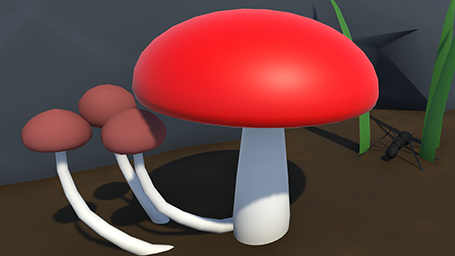

Mushrooms vs Ants
Game Dev TV Game Jam 2022
Game Description:
Mushrooms vs Ants is two person entry to the 2022 Game Dev TV Game Jam. The theme of the jam was "Death is only the beginning". Your colony of mushrooms is under attack by an endless wave of hungry ants! You must grow exploding mushrooms at strategic spots, and blow them up to destory the ants before they reac the master mushroom. Exploding mushrooms that are grown by the corpse of an ant will grow faster and have a more powerful explosion.
Controls:
Click on any unoccupied piece of ground to grow a an exploding mushroom. Mushrooms take a couple seconds to grow, increasing in explosive strength as they grow. Mushrooms that are planted near an ant corpse will consume the corpse, grow faster, and have a large explosion radius.
Game Credits
- James Dalziel - Game Designer, Programmer, Art
- Stefan O'connel - Game Designer, Programmer
